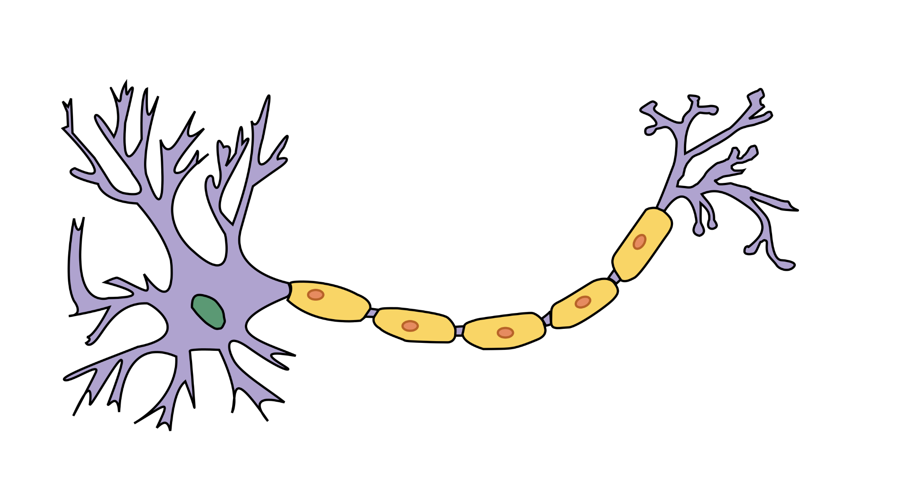
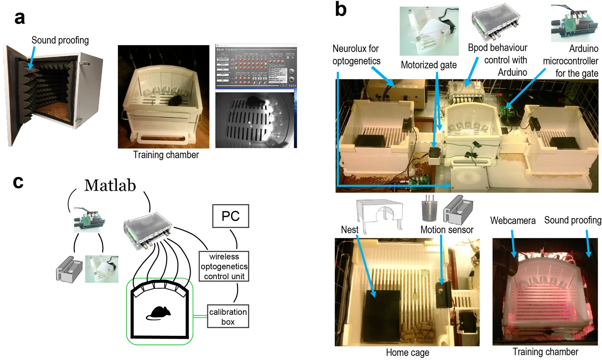
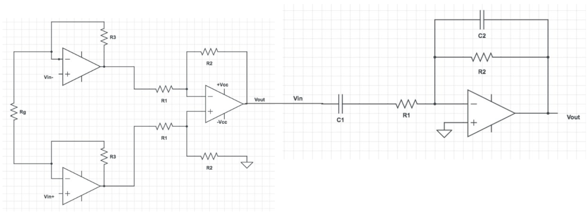
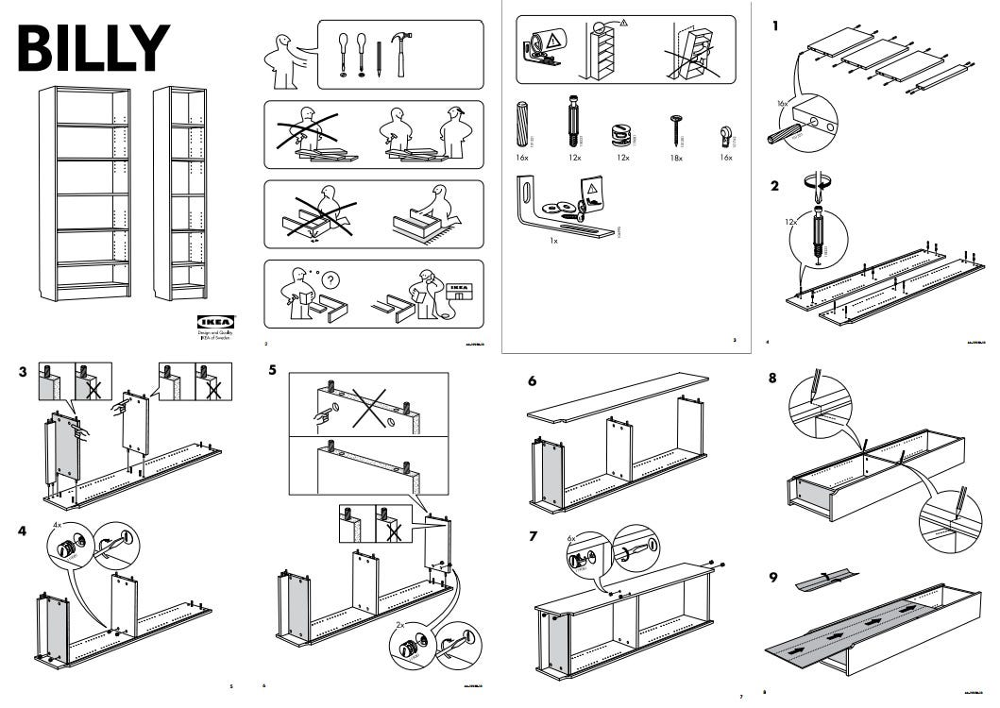
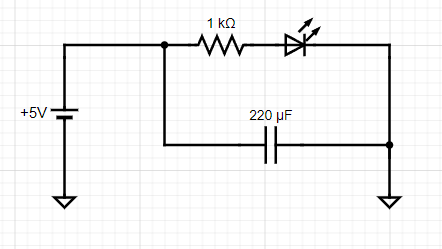
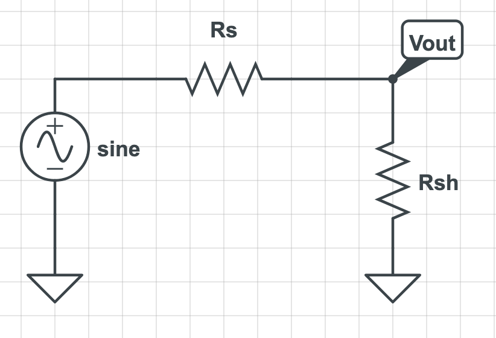
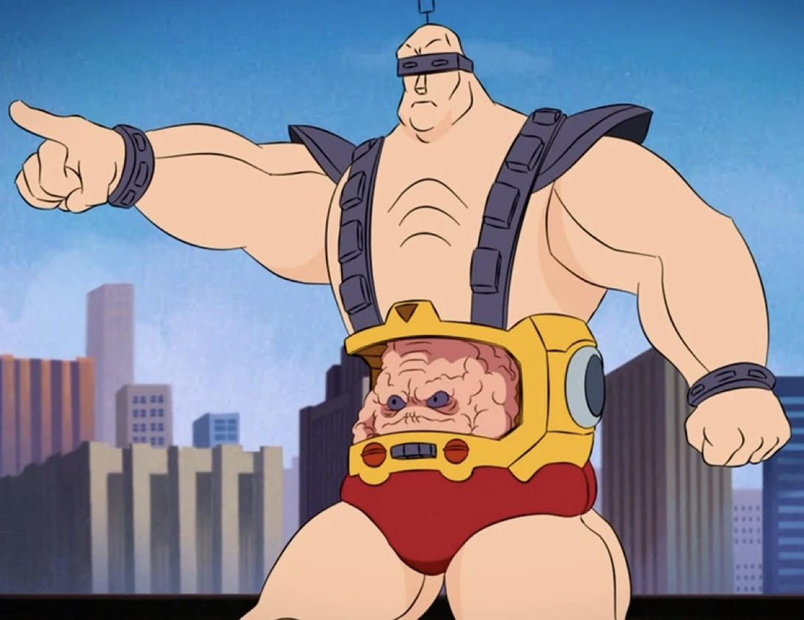

Module Introduction
Ephys, Behavior, & Passive Electronics
From understanding basic charge carriers to constructing passive recording and filtering networks.
Course: TENSS 2026
Module: Day 1.0
Instructors: Jon Newman & Ephys Team
Module Learning Goals
Overview- Bioelectrical Principles: How extracellular potentials arise from ionic motion.
- Recording Chain: How we sense, amplify, filter, and digitize signals.
- Passive Electronics 101: Breadboarding and analyzing components (resistors, dividers, capacitors, filters).
- Source Impedance: Understanding how measurement devices affect biological recordings.
- Closed-Loop Systems: Combining electrical measurements with behavioral monitoring.

[Figure: Neuron/Electrode Interface]
Bioelectric Signals in Action
Biology- ECG / EMG: Massive electrical signals from muscle contractions or cardiac muscle fibers.
- EEG: Synaptic potentials summed across millions of cortical neurons, recorded at the scalp.
- LFP (Local Field Potential): Intracranial recording showing local synaptic population currents.
- Single Spikes (Units): Ultra-fast voltage changes ($<1\text{ ms}$) from individual action potentials.

ECG/EMG
LFP/Spikes
The Recording Chain: "From Resistor to Spike"
Engineering- Electrode Interface: Picks up ionic current flow and converts it to electronic current.
- Amplifier (Active): Scales tiny extracellular microvolts ($\mu\text{V}$) to voltages readable by digitizers.
- Filters (Passive/Active): Eliminates noise and separates slow LFPs from fast spikes.
- Digitizer (ADC): Samples the continuous analog voltage into binary arrays for computer storage.

Brain → Electrode → Amplifier → Filter → ADC → PC/Software
Behavior and Closed-Loop Systems
Systems- Closed-loop logic: Reading sensor inputs (e.g., beam-breaks) to drive actuators (e.g., LED cues, optogenetic lasers).
- Open Ephys Integration: Routing behavioral cues and ephys signals into a synchronized acquisition stream.
- Real Life is Messy: Noise, alignment drift, and parasitic capacitance require solid grounding and isolation techniques.
[Figure: Experimental Arena Setup]
Charged Particles & Electric Fields
Physics 101- Biological Charges: Our charge carriers are ions ($\text{Na}^+, \text{K}^+, \text{Cl}^-, \text{Ca}^{2+}$).
- Coulomb Force: Like charges repel, opposite charges attract.
- Electric Field ($\vec{E}$): Space vector describing the force a unit charge would feel.
- Charge Motion: An electric potential (voltage) difference creates an electric field, exerting a force:
\vec{F} = q \cdot \vec{E}This force accelerates the ions, generating biological currents.

[Figure: Electric Field Lines Around Charges]
Voltage, Current, & Resistance
Electronics 101- Voltage ($V$): The potential energy difference pushing charge between two points. Measured in Volts ($V$).
- Current ($I$): The flow rate of charges through a conductor. Measured in Amperes ($A$).
- Resistance ($R$): Opposition to charge movement. Impedes current and dissipates energy as heat. Measured in Ohms ($\Omega$).
- Ohm's Law:
V = I \cdot R

[ V ↔ I • R ]
Hydraulic Analogy
Intuition| Electrical Concept | Hydraulic Counterpart | Physical Action |
|---|---|---|
| Voltage ($V$) | Water Pressure / Height Difference | The force pushing charge/water. |
| Current ($I$) | Flow Rate (Liters/Sec) | The volume of charge/water in motion. |
| Resistance ($R$) | Pipe Restriction / Narrowing | Limits the flow rate for a given pressure. |
| Ground ($0\text{V}$) | Sea Level | The arbitrary reference point for height/potential. |
Note: Just like water needs a height gradient to flow, electrical charges require a voltage difference to flow. No gradient means no current.
Conservation of Charge & Loops
Electronics 101- Loop Topology: Because charge is conserved, current cannot pile up anywhere. It must travel in closed loops.
- Ground Reference: Voltage is always relative. Ground ($0\text{V}$) is an arbitrarily selected common pathway to measure other potentials against.
- Kirchhoff's Current Law: The sum of currents entering any junction (node) must equal the sum of currents leaving it:
\sum I_{\text{in}} = \sum I_{\text{out}}

[Figure: Closed Loop Schematic]
Series & Parallel Resistances
Electronics 101Series Resistors
Current is identical through all resistors. Overall resistance increases.
R_{\text{total}} = R_1 + R_2 + \dots
Parallel Resistors
Voltage drop is identical across all resistors. Total resistance drops.
\frac{1}{R_{\text{total}}} = \frac{1}{R_1} + \frac{1}{R_2} + \dots

[Figure: Resistors in Series and Parallel]
The Voltage Divider
Exercise 1-1- Function: Attenuates/splits an input voltage using resistors.
- Formula: The output voltage is a fraction of the input:
V_{\text{out}} = V_{\text{in}} \cdot \frac{R_2}{R_1 + R_2}
- Passive Attenuation: Because this is passive, $V_{\text{out}}$ can never exceed $V_{\text{in}}$ (gain is always $\le 1$).
- Use Cases: Reference scaling, signal attenuation, and sensor calibration.
[Voltage Divider Schematic]
Source Impedance & Loading
Exercise 1-3- The Problem: Biological electrodes have a series resistance ($R_s$). Recording devices (scopes, amplifiers) have a shunt resistance to ground ($R_{\text{sh}}$).
- Divider Effect: These form an unintended voltage divider:
V_{\text{measured}} = V_{\text{bio}} \cdot \frac{R_{\text{sh}}}{R_s + R_{\text{sh}}}
- Loading: If $R_{\text{sh}}$ is low (e.g. $220\,\Omega$), the measured signal drops close to $0$.
- Rule of thumb: To prevent signal attenuation, ensure recording input impedance is massive: $R_{\text{sh}} \gg R_s$.

[Electrode & System Shunt Divider]
Capacitors & Charge Storage
Exercise 1-4- Definition: Two conductors separated by a dielectric. Stores charge ($Q = C \cdot V$).
- Dynamic behavior: Capacitors oppose sudden changes in voltage. Current is proportional to rate of change:
I = C \cdot \frac{dV}{dt}
- Biology: The lipid cell membrane acts as a capacitor, storing charge and delaying potential changes.
[Capacitor discharge schematic]
Capacitive Reactance
Passive Filters- Frequency-Dependent Resistance: To AC signals, a capacitor behaves like a resistor whose value (reactance $X_c$) changes with frequency:
X_c = \frac{1}{2\pi f C}
- DC ($f = 0\,\text{Hz}$): $X_c = \infty$. Capacitors block DC voltages completely.
- AC ($f \rightarrow \infty$): $X_c \rightarrow 0$. High frequencies pass freely.
DC → | | → BLOCKED
AC → | | → PASSED
Passive RC Filters
Part 2 of Practical- High-Pass Filter: Capacitor in series, resistor to ground. Passes high frequency spikes, blocks DC drift.
- Low-Pass Filter: Resistor in series, capacitor to ground. Shunts high frequencies to ground, leaving slow LFPs.
- Cutoff Frequency ($f_c$): Frequency where output power is halved (~30% drop in amplitude):
f_c = \frac{1}{2\pi R C}

[High-Pass & Low-Pass Filter Schematics]
Summary & Prep
Recap- Voltage Dividers govern scaling and electrode loading. Remember: keep amplifier input impedance high!
- Capacitors behave dynamically: they block slow drift (DC) and pass fast signals (AC).
- RC Circuits let you construct simple high-pass and low-pass filters to isolate target signals.
Ready for Part 1: You will now build a physical voltage divider, measure biological source loading, and capture capacitor discharge curves on the oscilloscope.